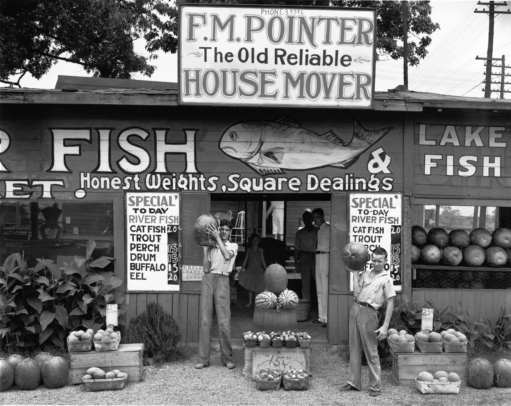

Driving Songs

90210
The Courtneys
I really really really like the way they sing 'Breath in, breath out'
Nothing To Be Done
The Pastels
My Problem
Say Sue Me
One of my favorite bands recently. A really soothing track with a great South Korean acent (!)
Sometimes Always
The Jesus and Mary Chain
Disappearing Industries
Grass Widow
Been Hiding
Aislers Set
Aislers Set! My favorite band.
Bombshelter Pt. 1
The Halo Benders
Crush the Flowers
The Wake
Gassenhauer
Carl Orff
(from Badlands)
From an amazing movie that's basically a Western if it weren't set in the great plains.
The Frontier
Avalon Emerson
Perfect techno that is so gentle and intense and windswept -- like driving home after camping.
The Clapping Song
Shirley Ellis
Lay Back In The Sun
Spiritualized
Sleeing Beauty
Martha
There are some great Scottish accents in here
Mirror
Cold Beat
This band has the same frontwoman as Grass Widow (above). Mumbling ice-cold pop.
Come On Over
Veronica Falls
Green (Take Nine)
Daniel Bachman
Also not quite western, but really pretty
Boom Boom Boom
Fleabite
This is an indie cover of that 90s euro-dance track (so automatically good). They find / bring out so much wistfulness / longing. SO GOOD, UGHH.